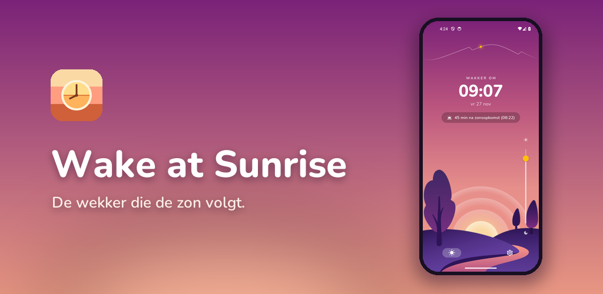
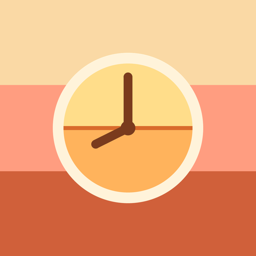
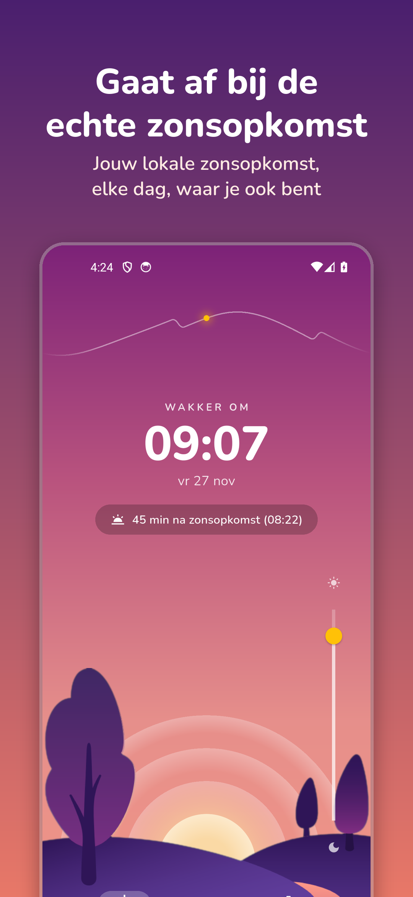
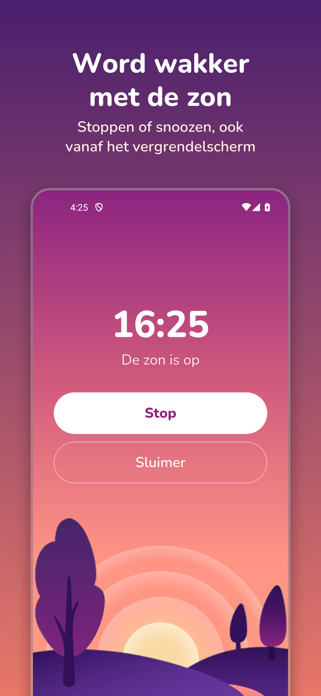
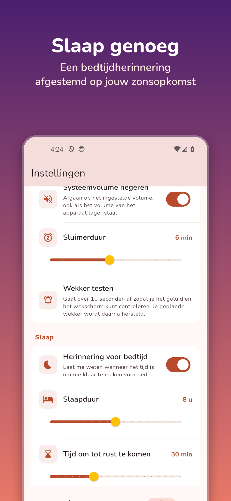

Perskit
Bijgewerkt op 18 november 2026 ·
Wake at Sunrise is een Android-wekker die afgaat bij de echte zonsopkomst waar je bent — berekend op de telefoon — en daarmee meeschuift, een minuut of twee per dag, door de seizoenen heen en over tijdzones heen. Gebruikers kiezen of ze bij zonsopkomst wakker worden of een willekeurig aantal minuten ervoor of erna. De app is gratis, met een optionele Premium voor zachte wekgeluiden en herinneringen voor bedtijd; er is geen account en er zijn geen advertenties, en de locatie verlaat het toestel nooit. De app wordt gemaakt door een onafhankelijke ontwikkelaar.
| Naam | Wake at Sunrise |
|---|---|
| Ontwikkelaar | Onafhankelijke ontwikkelaar |
| Platform | Android 7.0 en nieuwer · iOS in ontwikkeling |
| Uitgebracht | 16 november 2026, in Google Play |
| Prijs | Gratis · optionele Premium, per jaar of eenmalig levenslang |
| Talen | Engels, Portugees (Brazilië), Duits, Zweeds, Noors, Deens, Fins, Nederlands, Spaans, Russisch |
| Privacy | Geen account, geen advertenties, geen tracking; zonsopkomst berekend op het toestel |
Ontdek het opGoogle Play
Binnenkort in deApp Store
Afbeeldingen










Links
Contact
Voor interviews, reviewcodes of iets anders kun je schrijven naar het e-mailadres van de ontwikkelaar.